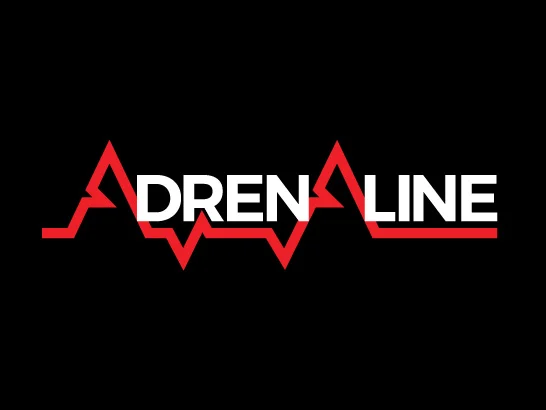

Sobre o desenvolvedor do site
Rodrigo Tessitore França
Formado em Administração pelo Mackenzie, já atuou em empresas nas áreas de Vendas Internas, Business Intelligence e Marketing Digital.
Atualmente está em fase de transição de carreira, estudando há quase 1 ano para se tornar desenvolvedor Front-end em busca da sua primeira oportunidade!



Sobre o projeto do site
Este site foi desenvolvido, como pré-requisito para aprovação do Bootcamp Intensivo Front-end do instituto infnet. Foi usado como inspiração o blog Adrenaline, blog que trás diversos posts e notícias interessantes sobre hardware e jogos, pelo qual eu tenho grande admiração.